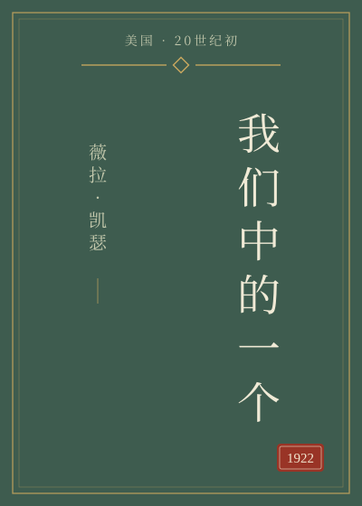
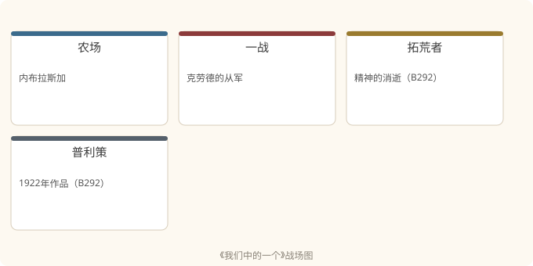

我们中的一个
一、基本信息
| 作者 | 薇拉·凯瑟 |
|---|---|
| 成书/出版 | 1922年（Britannica：One of Ours (1922), which won the Pulitzer Prize——B292） Willa Cather — Encyclopaedia Britannica（百科全书） |
| 国别/地区 | 美国 |
| 时代 | 近代 · 20世纪初 |
| 体裁 | 长篇小说 |
| 语言 | 英语 |

《我们中的一个》战场图（主题·结构图）
二、创作背景
Britannica（B292）：'One of Ours (1922), which won the Pulitzer Prize, and A Lost Lady (1923) mourned the passing of the pioneer spirit.'（哀悼拓荒者精神的消逝——B292）。
作者（B292）：'With O Pioneers! (1913) and My Ántonia (1918)'——边疆主题代表；'unique regionalism'。
三、内容脉络
克劳德·惠勒从内布拉斯加农场走向一战战场——'pioneer spirit'的战后余响（通说待核）。
四、主要人物表
| 人物 | 身份 | 说明 |
|---|---|---|
| 克劳德·惠勒 | 农场青年 | （通说待核） |
五、主题与艺术特点
- 拓荒精神的消逝（B292：mourned the passing of the pioneer spirit）。
- 一战的美国农村面孔（通说待核）。
- 寻找意义（通说待核）。
六、影响与评论
- Britannica：'One of Ours (1922), which won the Pulitzer Prize'（B292）。
Willa Cather — Encyclopaedia Britannica（百科全书） - 作者页：凯瑟'unique regionalism'（B292 作者级）。
Willa Cather — Encyclopaedia Britannica（百科全书）
七、阅读建议
难点
- 一战史。
- 农场叙事的舒缓节奏。
- 《我们中的一个》（中译本信息待核）。
- 英文原版（公有领域）。
凯瑟战争题材之作。
八、待核实
- 1922年出版（Alfred A. Knopf说）核对。
- 克劳德·惠勒人名核对。
- 普利策奖1923年颁奖说（B292 作1922出版）核对。
本页主要来源
薇拉·凯瑟的其他收录作品：我的安东妮亚